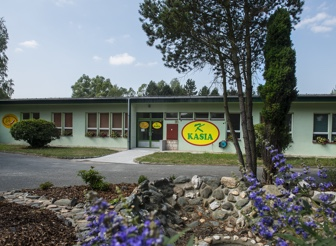

Dovoz a vstupní kontrola
Koření odebíráme přímo ze zemí původu a každou dodávku kontrolujeme při příjmu.
Dovážíme, čistíme, meleme a mícháme koření pro velkoobchody a řetězce, gastro provozy, výrobce uzenin i výrobce potravin — pod značkou VERA GURMET.
Nejsme jen překupník. Surovinu dovezeme, zkontrolujeme, zpracujeme a zabalíme sami.
Koření odebíráme přímo ze zemí původu a každou dodávku kontrolujeme při příjmu.
Surovinu zbavíme nečistot a vytřídíme, aby do dalšího zpracování šla jen kvalitní část.
Meleme na požadovanou hrubost — od celého koření po jemně mleté podle potřeby provozu.
Kořenicí směsi mícháme podle vlastních i zákaznických receptur ve stálém složení.
Pasty, sójová omáčka, tekuté polévkové koření a marinády z vlastní výrobní linky.
Balíme do formátů od velkých gastro balení po menší balení pro koncové provozy.
Vizuály jsou ručně kreslené — fotografie koření zatím nepoužíváme. Skutečné produkty rádi ukážeme na poptávku.
Naše stálice — dovážené ze zemí původu, dostupné celé i mleté na požadovanou hrubost.
Patří k tomu, v čem jsme nejsilnější — sušíme a zpracováváme do granulátu i mleté podoby.
Sušené byliny tříděné a balené pro stálou vůni i barvu v každé šarži.
Mícháme vlastní receptury i směsi přesně podle zadání zákazníka — gastro i výroba.
Vlastní mokrá výroba — od česnekové pasty z Týniště po tekuté polévkové koření a marinády.
Stálé dodávky koření a směsí ve velkoobchodních objemech a stabilní kvalitě pro další distribuci.
Koření a kořenicí směsi pro kuchyně, vývařovny a stravovací provozy — včetně gastro směsí z Toužimi.
Směsi a koření pro masnou výrobu, namíchané podle receptury a dodávané v konstantním složení.
Surovinové koření, sušená zelenina a mokrá výroba jako vstup do dalšího potravinářského zpracování.

Dohledatelnost od suroviny po balení. Surovinu sami dovezeme, vyčistíme, vytřídíme, semeleme, namícháme a zabalíme — celý proces zůstává u nás.
Naše koření a směsi míří do šesti zemí:
Pošlete poptávku nebo zavolejte — sortiment a podmínky probereme napřímo.
+420 323 601 422